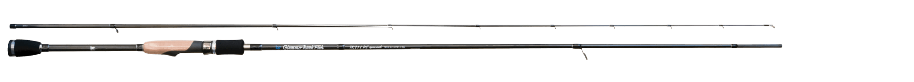
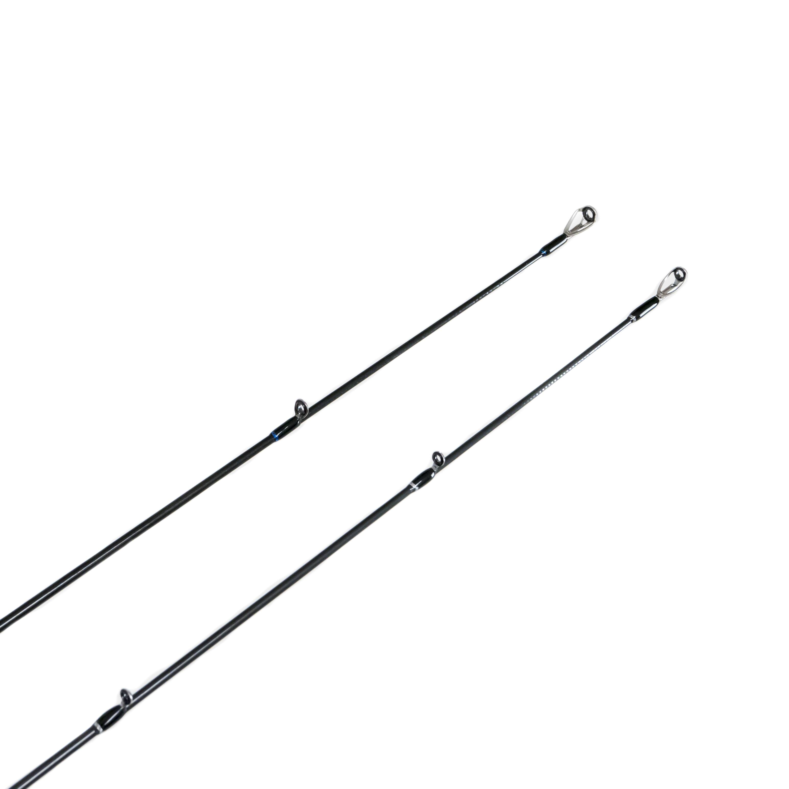

GRF-TR711 PEスペシャル
（GRF-TR711 PE special）
GRF-TR711 PEスペシャル（GRF-TR711 PE special）はBREADEN（ブリーデン）のライトゲームロッドです。
繊細さとパワーを、7フィート台の軽快さで。メバル・アジなどのライトゲームから、メタルマルでのライトショアジギまで使えるロッドです。
2005年に生まれ、進化と深化を続けるGRFシリーズの「TR division」。85PE special・93PE specialの繊細なコントロール性能と、不意の大物も受け止めるベリーからバットのパワーはそのままに、7フィート台の軽快さと手返しの良さを持たせたモデルです。

画像出典:BREADEN公式HP
スペック
- メーカー
- BREADEN（ブリーデン）
- タイプ
- スピニング（2ピース）
- 全長
- 7'11"（仕舞寸法125cm）
- 自重
- 99g
- ルアー重量
- 1.5〜20g
- 適合ライン
- PE0.3〜0.6号
- ガイド
- チタンフレームTORZITEリング（トップ：T-KGTT3.5／バット：T-KLTG12ほか）
- リールシート・グリップ
- FUJI VSSシート・セパレートグリップ（コルク・EVA）
- 価格
- オープン価格
▼今すぐチェック

GRF-TR711 PEスペシャルの特徴
マイクロリグを正確に操りながら、巨メバルを強引に引き出せる
-
ライトリグからメタルマル19まで
ライトリグ、軽量のハードプラグから13VIB、13iSlider、メタルマル19まで、1.5〜20gと幅広いルアーを扱える。
-
PEスペシャルのパワーはそのまま
85PE special・93PE specialの繊細なコントロール性能と、不意の大物も受け止めるベリー〜バットのパワフルで柔軟な対応力を受け継ぐ。
-
7フィート台の軽快さ
7フィート台の軽さと手返しの良さで、キャスト時の取り回しを気にせず、機敏で繊細な操作ができる。自重は99g。
GRF-TR711 PEスペシャルの選び方
GRF TRには、7フィート11インチの「TR711 PE special」のほか、8フィート5インチの「TR85 PE special V2.4」、9フィート3インチの「TR93 PE special V2.4」があります。
常夜灯周りの堤防や港内で、取り回しの良さと手返しを重視するなら711。フロートリグや足場の高い堤防・磯、サーフでの遠投が多いなら85や93を選ぶと良いでしょう。
GRF-TR711 PEスペシャルの向いている釣り
メバル・アジのジグ単やプラグ、メタルマル19を使ったライトショアジギングなど、PEラインで行うライトゲーム全般が得意です。
ウィードエリアやテトラ帯、足場の高い堤防から大型のメバルを引き出したい時にも頼りになります。
ワンポイント
PEライン0.3〜0.6号に合わせた設計です。リールは2000〜2500番クラスのスピニングと合わせるとバランスを取りやすいです。
GRF TRのモデルの使い分け
| モデル | 全長・自重 | ルアー・ライン |
|---|---|---|
| TR711 PE special（この記事） | 7'11"・99g | 1.5〜20g・PE0.3〜0.6号 |
| TR85 PE special "V2.4" | 8'5"・134g | 1.5〜20g・PE0.3〜0.6号 |
| TR93 PE special "V2.4" | 9'3"・139g | 1.5〜20g・PE0.3〜0.6号 |
※数値は公式ページより。いずれも2ピース・オープン価格です。
ロッドの各部
TR711 PE specialは、メタリックブラックのブランクスにホワイトとブルーでロゴとスペックをプリント。ガイドはチタンフレームTORZITEリングです。

ティップセクショントップガイドT-KGTT3.5、ティップガイドT-KTTG3（チタンフレームTORZITEリング）。
画像出典:BREADEN公式HP
GRF-TR711 PEスペシャルとあわせてチェックしたいアイテム
-
 メタルマル19
BREADEN
詳細はこちら＞
メタルマル19
BREADEN
詳細はこちら＞
このロッドで扱える、魚種限定解除のブレードジグ。
-
 ビーナッツ
BREADEN
詳細はこちら＞
ビーナッツ
BREADEN
詳細はこちら＞
同じブリーデンのメバリングプラグ。
-
 スモウヘッド
BREADEN
詳細はこちら＞
スモウヘッド
BREADEN
詳細はこちら＞
同じブリーデンのジグヘッド。ジグ単に。